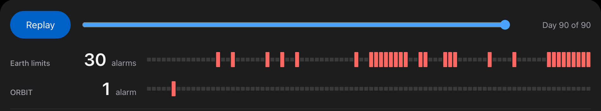

Her mother said it minutes ago. At Mars, a voice from home travels up to 20 minutes. The answer takes 20 more. Nobody can talk like that.
Signal delay “up to 20 minutes one way”: NASA Human Research Program. Lena is ORBIT’s demo astronaut and is invented. The delay is not.
live calls home at Mars distance. In orbit, less family contact already brings growing loneliness.
Gushin et al. 2021, Frontiers in Physiology · NASA names it a stressor: NASA OCHMO-TB-016
of sleep a night on the ISS. 8.5 h are scheduled. 3 of 4 crew took sleep medication.
Barger et al. 2014, Lancet Neurology · 21 ISS crew; medication at least once, 12 of 16 asked
of pilots have avoided healthcare for fear of losing their licence. Astronauts fear disqualification too.
Hoffman et al. 2022, 3,765 US pilots, anonymous survey · astronauts: National Academies, Safe Passage, 2001
is when problems are most likely in Mars simulations on Earth.
Rosenberg et al. 2022, Frontiers in Physiology · HI-SEAS, 18 people, 8 to 12 months
false alarms per person in six months, in people who were healthy.
We ran Earth’s medical limits over NASA data from 29 healthy bed-rest volunteers. They raised an alarm on 13.5% of days. A crew that gets false alarms stops believing them.
Data: NASA Life Sciences Portal, UTMB bed-rest study · Our analysis, checked by tests: Replay screen in the live app
The body runs warmer in flight. 38.0 °C is a fever on Earth and normal for Lena. Earth’s limits cannot know that.
Stahn et al. 2017, Scientific Reports · ESA/Charité study of 11 ISS astronauts, not NASA data
is how NASA describes crew time in flight. A check that costs time and is often wrong gets skipped.
NASA ISS Medical Projects, 2017 · about research time on the ISS
Family and friends who agreed record a short message every day. It travels to the ship like any other data.
In Lena’s free time. She talks back, and her words go home as her reply.
When a reading is off, ORBIT says so inside the call and asks for today’s numbers. She says them, and they are saved.
Good morning, Lena. It is me. I am sitting in the kitchen with your coffee cup, the blue one.
One thing before the next message. ORBIT asked to say this to you in its own words.
Blood pressure has been well below your normal in this phase on two readings in a row. Sit or lie down, drink water, and repeat the reading after 5 minutes.
When you have taken it, tell me the numbers. Then we go on.
Words from the app’s demo call. Marta is invented, like Lena.
Her own recording, played as it was recorded. ORBIT never rewrites it and never imitates her.
Joins the recordings. It says it is an AI. It may not say one word about health; a filter blocks it.
Every health sentence comes word for word from fixed rules. No language model writes one, and the model never sees her readings.
AI in this product: the linking voice and the virtual doctor are AI-generated and labelled as AI wherever they speak. ORBIT is a prototype, not a medical device.
2.3× fewer false alarms. ORBIT judges each reading against the person’s own normal, not Earth’s. Same two-day rule on both sides, 29 volunteers.

Real app screen. One NASA volunteer, 90 days: each red mark is an alarm.
Honest limits. Bed rest is a ground stand-in for flight. The data holds no real illness, so the problems are planted. Small blood-pressure rises: Earth’s limits catch more.
Data: NASA Life Sciences Portal, UTMB bed-rest study · Method and every number: miss-rate.md · Try it: Replay in the live app
“Good morning, Mama.” Lena’s reply is on its way home. Her blood pressure is logged. Tomorrow there is another call.